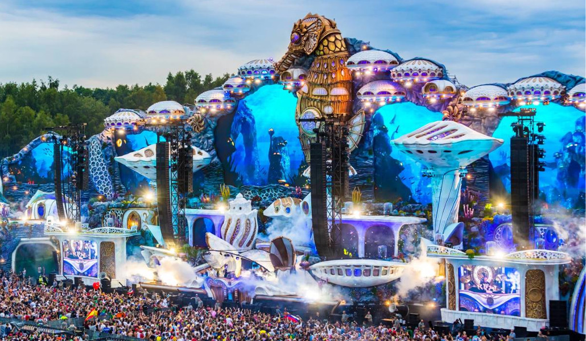

| Tomorrowland es uno de los mas grandes e increibles festivales de musica electronica en el mundo, celebrado en Boom-Belgica. Cada año, finalizando el mes de Julio, millones y millones de personas asisten de diferentes partes del mundo para dejarse deleitar por tres dias de extrema locura y diversion disfrutando de los conciertos de musica electronica y viviendo en magico mundo de tomorrowland |
 |
| El festival cada año cambia, su tematica como se observa en la parte izquierda de la pantalla, el cual pertenece a uno de los conciertos de tomorrowland 2015 el cual recreo un reino de encanto llamado "Melodia"; y el de este año cuya tematica fue "The history of Planaxis" el cual recreaba una ciudad bajo el agua como se observa en la imagen superior. | |
| Unite | |
| Y para aquellos que por diversos factores, no pueden viajar a Belgica, Tomorrowland organiza eventos en 7 paises distintos para trasmitir en vivo los conciertos en belgica, ademas tambien se dan conciertos en estos unites | |
| En estos unite las personas podran disfrutar de la magia de tomorrowland aunque a un nivel mucho menor en su propio pais o un pais mas cercano, dado que muchas veces tomorrowland hace unite con mexico, personas de latinoamerica viajan alli para disfrutar de tomorrowland unite | |